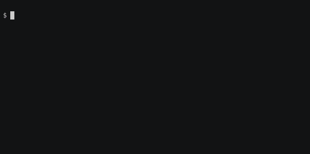

Building your first container
In this simple example we will build Singularity container that will run the following programs fortune | cowsay | lolcat by installing all necessary libraries and packages within Ubuntu 16.04 Linux distribution setup.
Simple Singularity definition file
lolcow.def
BootStrap: docker
From: ubuntu:16.04
%post
apt-get -y update
apt-get -y install fortune cowsay lolcat
%environment
export LC_ALL=C
export PATH=/usr/games:$PATH
%runscript
fortune | cowsay | lolcat
Building the container
$ sudo singularity build lolcow.sif lolcow.def
Starting build...
Getting image source signatures
Copying blob 4007a89234b4 done
Copying blob 5dfa26c6b9c9 done
Copying blob 0ba7bf18aa40 done
Copying blob 4c6ec688ebe3 done
Copying config 24336f603e done
Writing manifest to image destination
Storing signatures
...
INFO: Adding environment to container
INFO: Adding runscript
INFO: Creating SIF file...
INFO: Build complete: lolcow.sif
Run the Singularity container
$ ./lolcow.sif
_________________________________________
/ You will stop at nothing to reach your \
| objective, but only because your brakes |
\ are defective. /
-----------------------------------------
\ ^__^
\ (oo)\_______
(__)\ )\/\
||----w |
|| ||
 asciinema
Syntax of the definition file
lolcow.def
1 2 3 4 5 6 7 8 9 10 11 12 13 | |
header: Bootsrap agents - online documentation
library- images hosted on the Container Librarydocker- images hosted on Docker Hubshub- images hosted on Singularity Hub- ...
- Other:
localimage,yum,debootstrap,oci,oci-archive,docker-daemon,docker-archive,arch,busybox,zypper
header: From
Depending on the value assigned to Bootstrap, other keywords may also be valid in the header. For example, when using the library bootstrap agent, the From keyword becomes valid.
%post
This section is where you can download files from the Internet, install new software and libraries, write configuration files, create new directories, etc.
%environment
The %environment section allows you to define environment variables that will be set at runtime.
%runscript
The contents of the %runscript section are written to a file within the container that is executed when the container image is run (either via the singularity run command or by executing the container directly as a command)
Brief summary with examples - online documentation
All sections - online documentation
Installing software from a local package
Sometimes, you cannot download a package directly or the software needs signing licenses. In this case you need to push in the locally downloaded file during the build process. You can get the latest version of the file bellow from here: https://jp-minerals.org/vesta/en/download.html (download the the linux VESTA-gtk3.tar.bz2 version).
vesta.def
Bootstrap: docker
From: ubuntu:20.04
%files
VESTA-gtk3.tar.bz2 /
%post
export DEBIAN_FRONTEND=noninteractive
apt-get update && apt-get -y dist-upgrade && \
apt-get install -y libxmu6 libxss1 libxft2 libquadmath0 libpng16-16 bzip2 libgl1-mesa-glx \
libglu1-mesa libglib2.0-0 libgtk-3-0 libgtk-3-dev libgomp1 && \
apt-get clean
# Install/unpack the precompiled software
tar -C /usr/local -xvf /VESTA-gtk3.tar.bz2 && rm /VESTA-gtk3.tar.bz2
%runscript
/usr/local/VESTA-gtk3/VESTA "$@"
Note the %files section. The line bellow will copy
VESTA-gtk3.tar.bz2 from the current directory to the root folder
\ in the Singularity container. Also, you need to figure out yourself all required libraries and dependencies and install them.